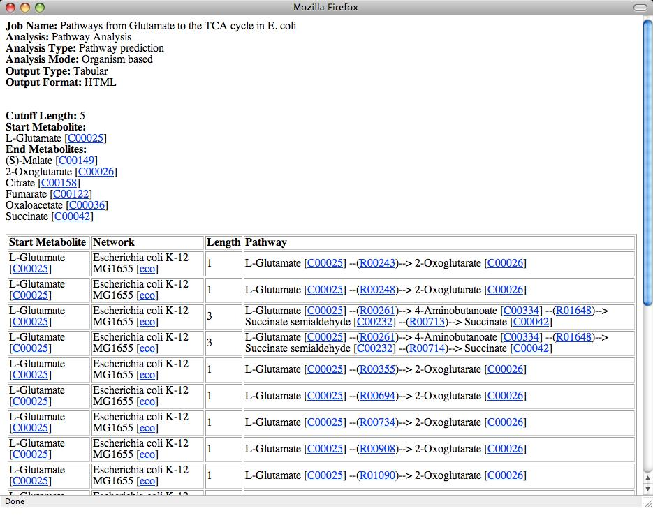

Rahnuma: Pathway Prediction and Network Analysis Tool
Tutorial ‒ Pathway Prediction
Task: To identify possible pathways from L-Glutamate to the TCA Cycle in Escherichia coli
K12.
Steps: The steps required to submit the job are as follows.
Main Page
- Specify a job name, e.g. "Pathways from Glutamate to the TCA cycle in
E. coli".
- Specify a valid email address to get an email notification once the job is
finished.
- Select "Pathway Analysis" as the Analysis.
- We would like to predict the pathways between metabolites, so select
"Pathway prediction" as Analysis Type.
- Select "Organism" as Analysis Mode as we want to perform analysis on an
organism rather than on a phylogeny.
- Network Mode is useful when performing analysis on multiple organisms. It
specifies if the organisms should be treated individually or combined to build
one single network. Let the default option "Individual" selected.
- Select the desired output type, tabulated or descriptive.
- Select the desired output format, text or HTML.
- Click "Next" to go to the parameters page.
A sample screenshot is shown below.
Parameters Page
- To select an organism, click "Select".
- Scroll down the organism list to find the required organism.
- Select "Amino Acid" as subset if not already shown.
- Select "L-Glutamate" as Start Metabolite.
- To select the TCA cycle compounds as end metabolites, change the subset to
"TCA Cycle".
- Select all the TCA cycle compounds. To do this, click the first compound
and then while holding the Shift key click on the last compound.
- Choose the required pathway prediction mode. To use the manually annotated
connections, use the "Connection" mode.
- Since we would like to trace the pathway to the TCA cycle, select "Carbon
Connections" as Connection Option.
- Specify the cutoff length for the pathways.
- Select "Pathway" from the Return Value since we would like a list of
predicted pathways. To get a list of the reactions only which are involved in
the pathway select "Reaction" as Return Value.
- Click "Submit" to submit the job.
A sample screenshot of the parameters page is shown below.
Tip: You can click on [?] at anytime to go to the corresponding
section on the help page.
Output: A sample output is shown below.

- The header part of the result file shows the parameter values
selected while submitting the job. It also shows the pathway prediction
parameters, i.e. cutoff length, start and end metabolites.
- Results for pathway prediction are shown in a tabulated format
(Tabulated Output was selected as Output Type) with following columns.
- Start Metabolite
- Network
- Pathway Length
- Pathway
For descriptive output, the results are grouped by Network and then by Start Metabolites.
- For HTML output, as in this case, entries are hot-linked to
corresponding entries in KEGG.
For further enquiries or comments/suggestions, please contact Aziz Mithani at
mithani [at] stats [dot] ox [dot] ac [dot] uk.
Return to the list of tutorials.